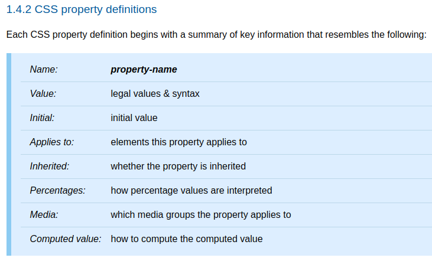

<!DOCTYPE html><html><head><meta charset="utf-8"><title>重新認識 CSS - CSS 如何處理屬性值 | Titangene Blog</title><meta http-equiv="X-UA-Compatible" content="IE=edge"><meta name="viewport" content="width=device-width,initial-scale=1,maximum-scale=1"><meta name="HandheldFriendly" content="True"><meta name="apple-mobile-web-app-capable" content="yes"><meta name="author" content="Titangene"><link rel="shortcut icon" href="/favicon.ico"><link rel="alternate" href="/atom.xml" title="Titangene Blog"><meta name="description" content="今天來介紹 CSS 如何處理屬性值。"><meta property="og:type" content="article"><meta property="og:title" content="重新認識 CSS - CSS 如何處理屬性值"><meta property="og:url" content="https://titangene.github.io/article/css-value-processing.html"><meta property="og:site_name" content="Titangene Blog"><meta property="og:description" content="今天來介紹 CSS 如何處理屬性值。"><meta property="og:locale" content="zh_TW"><meta property="og:image" content="https://titangene.github.io/images/cover/css.png"><meta property="article:published_time" content="2019-09-24T08:30:15.000Z"><meta property="article:modified_time" content="2020-01-22T12:33:37.000Z"><meta property="article:author" content="Titangene"><meta property="article:tag" content="IT 鐵人賽"><meta name="twitter:card" content="summary_large_image"><meta name="twitter:image" content="https://titangene.github.io/images/cover/css.png"><meta name="twitter:creator" content="@titangeneTW"><meta name="twitter:site" content="@titangene_blog"><meta property="fb:admins" content="100001106016019"><meta property="fb:app_id" content="2470546159839111"><meta property="og:image:width" content="1200"><meta property="og:image:height" content="630"><meta name="google-site-verification" content="AaJ39L7h-nWwJjXJMhAMtXSF6H6BUgGWXC80kYvLic8"><link href="https://fonts.googleapis.com/css2?family=Roboto&display=swap" rel="stylesheet"><link href="https://fonts.googleapis.com/css?family=Source+Code+Pro&display=swap" rel="stylesheet"><link rel="stylesheet" href="https://cdnjs.cloudflare.com/ajax/libs/font-awesome/5.13.0/css/all.min.css"><link rel="stylesheet" href="https://unpkg.com/gitalk/dist/gitalk.css"><link rel="stylesheet" href="/style.css"><script async src="https://www.googletagmanager.com/gtag/js?id=UA-129758206-1"></script><script>!function(a){function n(){dataLayer.push(arguments)}a.dataLayer=a.dataLayer||[],n("js",new Date),n("config","UA-129758206-1")}(window)</script><script>function setLoadingBarProgress(e){document.getElementById("loading-bar").style.width=e+"%"}</script><meta name="generator" content="Hexo 4.2.0"><link rel="alternate" href="/atom.xml" title="Titangene Blog" type="application/atom+xml"></head></html><body><div id="loading-bar-wrapper"><div id="loading-bar"></div></div><script>setLoadingBarProgress(20)</script><header class="l_header"><div class="wrapper"><div class="nav-main container container--flex"><a class="logo flat-box" href="/">Titangene Blog</a><div class="menu"><ul class="h-list"><li><a class="flat-box nav-home" href="/">Home</a></li><li><a class="flat-box nav-archives" href="/archives">Archives</a></li></ul><div class="underline"></div></div><div class="m_search"><form name="searchform" class="form u-search-form"><input type="text" class="input u-search-input" placeholder="Search"> <i class="fas fa-search"></i></form></div><ul class="switcher h-list"><li class="s-search"><a class="fas fa-search" href="javascript:void(0)"></a></li><li class="s-menu"><a class="fas fa-bars" href="javascript:void(0)"></a></li></ul></div><div class="nav-sub container container--flex"><a class="logo flat-box" href="/">Titangene Blog</a><ul class="switcher h-list"><li class="s-comment"><a class="far fa-comment-alt" href="javascript:void(0)"></a></li><li class="s-top"><a class="fas fa-arrow-up" href="javascript:void(0)"></a></li><li class="s-toc"><a class="fas fa-list-ol" href="javascript:void(0)"></a></li></ul></div></div></header><aside class="menu-phone"><nav><a href="/" class="nav-home nav">Home </a><a href="/archives" class="nav-archives nav">Archives</a></nav></aside><script>setLoadingBarProgress(40)</script><div class="l_body"><div class="container clearfix"><div class="l_main"><article id="post-css-value-processing" class="post white-box article-type-post" itemscope itemprop="blogPost"><section class="meta"><h2 class="title"><a href="/article/css-value-processing.html">重新認識 CSS - CSS 如何處理屬性值</a></h2><span class="post-time"><span class="post-meta-item-icon"><i class="fa fa-calendar"></i> </span><span class="post-meta-item-text">發表於</span> <time title="建立時間：2019-09-24 16:30:15" itemprop="dateCreated datePublished" datetime="2019-09-24T16:30:15+08:00">2019-09-24 </time><span class="post-meta-divider">|</span> <span class="post-meta-item-icon"><i class="fa fa-calendar-check"></i> </span><span class="post-meta-item-text">更新於</span> <time title="修改時間：2020-01-22 20:33:37" itemprop="dateModified" datetime="2020-01-22T20:33:37+08:00">2020-01-22</time></span> <span class="comments-count"><span class="post-meta-divider">|</span> <span class="post-meta-item-icon"><i class="fas fa-comment"></i> </span><a href="https://titangene.github.io/article/css-value-processing.html#comments" class="article-comment-count">留言</a></span><div class="post-category"><span class="post-meta-item-icon"><i class="fa fa-folder"></i> </span><span class="post-meta-item-text">分類於</span> <span itemprop="about" itemscope itemtype="http://schema.org/Thing"><a href="/categories/css/" itemprop="url" rel="index"><span itemprop="name">CSS</span></a></span></div></section><section class="toc-wrapper"><h3>目錄</h3><ol class="toc"><li class="toc-item toc-level-2"><a class="toc-link" href="#前言"><span class="toc-text">前言</span></a></li><li class="toc-item toc-level-2"><a class="toc-link" href="#Value-Processing"><span class="toc-text">Value Processing</span></a><ol class="toc-child"><li class="toc-item toc-level-3"><a class="toc-link" href="#Declared-values"><span class="toc-text">Declared values</span></a></li><li class="toc-item toc-level-3"><a class="toc-link" href="#Cascaded-values"><span class="toc-text">Cascaded values</span></a></li><li class="toc-item toc-level-3"><a class="toc-link" href="#Specified-Values"><span class="toc-text">Specified Values</span></a></li><li class="toc-item toc-level-3"><a class="toc-link" href="#Computed-Values"><span class="toc-text">Computed Values</span></a></li><li class="toc-item toc-level-3"><a class="toc-link" href="#Order-of-Appearance"><span class="toc-text">Order of Appearance</span></a></li></ol></li></ol></section><section class="article typo"><div class="article-entry" itemprop="articleBody"><p></p><p>今天來介紹 CSS 如何處理屬性值。</p><a id="more"></a><h2 id="前言"><a class="header-anchor" href="#前言"></a>前言</h2><blockquote><p>「重新認識 CSS」這個系列名稱的由來就如其名，我想要重新認識它。雖然以前就有學過 CSS，但這次想從 CSS Spec 中學到最原始的定義和內容，更加了解 CSS 的原理，讓我在切版的時候可以更加確定自己在做什麼，我踩到的雷只是因為我不夠了解它才會炸開。</p><p>在這 30 天的內容中，會將 Spec 內看到的資料整理成這個系列，也希望正在學 CSS 的各位可以更加了解它。另外我也會同時將文章發至我的 Blog，如果想直接看文內的程式碼 Demo 畫面，可以到我的 Blog 來看 😃。</p><p>本文同步發表於 iT 邦幫忙：<a href="https://ithelp.ithome.com.tw/articles/10220084" target="_blank" rel="noopener">重新認識 CSS - CSS 如何處理屬性值</a></p><p>「重新認識 CSS」系列文章發文於：</p><ul><li><a href="https://ithelp.ithome.com.tw/users/20117586/ironman/2617" target="_blank" rel="noopener">iT 邦幫忙</a></li><li><a href="https://titangene.github.io/tags/it-%E9%90%B5%E4%BA%BA%E8%B3%BD/">Titangene Blog</a></li></ul></blockquote><p>每個屬性的定義表 (definition table) 都定義了：</p><ul><li>Name：屬性名稱</li><li>Value：屬性值</li><li>Initial：initial value 為何</li><li>Applies to：此屬性適用於哪些元素</li><li>Inherited：是否為 <a href="https://www.w3.org/TR/css-cascade-3/#inherited-property" target="_blank" rel="noopener">inherited properties</a></li><li>Percentages：百分比值如何 interpreted</li><li>Media：該屬性適用於哪些 media group</li><li>Computed value：如何計算 Computed value</li></ul><p>如下圖：</p><p></p><p>圖片來源：<a href="https://www.w3.org/TR/CSS22/about.html#property-defs" target="_blank" rel="noopener">CSS 2.2 - 1.4.2 CSS property definitions</a></p><blockquote><p>詳情可參閱 <a href="https://www.w3.org/TR/CSS22/about.html#property-defs" target="_blank" rel="noopener">CSS 2.2 Spec - 1.4.2 CSS property definitions</a></p></blockquote><h2 id="Value-Processing"><a class="header-anchor" href="#Value-Processing"></a>Value Processing</h2><p>UA 解析了文件並在建構了 <a href="https://www.w3.org/TR/CSS22/conform.html#doctree" target="_blank" rel="noopener">document tree</a> 之後，UA 必須為 tree 中的每個元素以及 formatting structure (格式化結構) 中的每個 box 分配對應於目標 <a href="https://www.w3.org/TR/CSS22/media.html" target="_blank" rel="noopener">media type</a> 的屬性值。</p><div class="info"><p>document tree：source document (原始文件，在這邊可以指 HTML 或 XML) 中編碼的元素的 tree。該 tree 中的每個元素都只有一個父元素，但 root 元素 (在 HTML 中就是 <code>&lt;html&gt;</code> 元素) 除外。</p></div><p>所以每個屬性都會有一個值，而這些值 (也就是說元素或 box 的 CSS 屬性的 final value) 會通過下面幾個步驟來計算決定。</p><p>在說明步驟之前先來說這個計算過程中會用到的幾種值：</p><ul><li>declared value</li><li>cascaded value</li><li>specified value</li><li>computed value</li><li>used value</li><li>actual value</li></ul><h3 id="Declared-values"><a class="header-anchor" href="#Declared-values"></a>Declared values</h3><p>為了找到 declared value，應用於每個元素的每個屬性宣告，都會以 <a href="https://www.w3.org/TR/css-cascade-3/#filtering" target="_blank" rel="noopener">filtering declarations (過濾宣告)</a> 的方式來標識出 (identify) 可以適用於每個元素的所有宣告。只要符合下列情況，宣告就適用於各元素：</p><ul><li>宣告屬於當前適用於此文件的 style sheet</li><li>宣告不符合，帶有錯誤條件的條件規則 <a href="https://www.w3.org/TR/css3-conditional/" target="_blank" rel="noopener">CSS Conditional Rules Module Level 3</a></li><li>宣告屬於該 <a href="https://www.w3.org/TR/selectors-3/" target="_blank" rel="noopener">selector 與該元素 match 的樣式規則</a>。 (必要時需要考慮<a href="https://www.w3.org/TR/selectors-4/#scoping" target="_blank" rel="noopener">範圍 (scope)</a> )</li><li>有效語法：宣告的屬性是已知的屬性名稱，並且 declared value 與該屬性的語法 match</li></ul><p>適用於每個元素上的每個屬性的 declared value 會形成 declared value 的列表，此列表會由 cascade 來進行優先度排序。</p><h3 id="Cascaded-values"><a class="header-anchor" href="#Cascaded-values"></a>Cascaded values</h3><p>cascade 會使用各元素上屬性的 declared value 的無序列表，透過 <a href="https://www.w3.org/TR/css-cascade-3/#cascading" target="_blank" rel="noopener">Cascading</a> (明天會介紹) 流程選擇一個 “winning value”，也就是按照宣告的優先度來進行排序，優先度最高的宣告就會輸出一個 cascaded value (也可以說是在 <a href="https://www.w3.org/TR/css-cascade-3/#output-of-the-cascade" target="_blank" rel="noopener">cascade 的輸出 (output of the cascade)</a> 中排在最前面的值)。</p><p>如果 cascade 的輸出為空 (empty) 列表時，則沒有 cascade value。</p><div class="info"><p>cascade 的輸出 (output of the cascade)：每元素上的每個屬性的 declared value 的排序列表 (可能為 empty)。</p></div><h3 id="Specified-Values"><a class="header-anchor" href="#Specified-Values"></a>Specified Values</h3><p>Specified value 是由 style sheet 的作者 (也就是網頁開發者) 針對該元素指定的屬性值。</p><p>cascaded value 會透過 <a href="https://www.w3.org/TR/css-cascade-3/#defaulting" target="_blank" rel="noopener">defaulting</a> 流程來計算 specified value，以確保每個元素上的每個屬性都有一個 specified value，流程如下：</p><ul><li>是否為 <a href="https://www.w3.org/TR/css-cascade-3/#inherited-property" target="_blank" rel="noopener">inherited properties</a>：<ul><li>是：通過繼承從該父元素中取得 initial value</li><li>否：採用該屬性的 initial value</li></ul></li><li>Explicit Defaulting (顯式預設)：當 cascaded value 為下面某個 <a href="https://www.w3.org/TR/css3-values/#css-wide-keywords" target="_blank" rel="noopener">CSS-wide keywords</a> 時 (所有屬性都可以使用這些關鍵字)，會有對應的處理方式<ul><li><code>initial</code>：將 initial value 作為屬性的 specified value</li><li><code>inherit</code>：將 computed value 作為屬性的 specified value 和 computed value</li><li><code>unset</code>：是否為 inherited property：<ul><li>是：等同於 <code>inherit</code> 的作用</li><li>否：等同於 <code>initial</code> 的作用</li></ul></li></ul></li></ul><p>如果沒有 cascaded value 時，也會依照上面流程來決定 specified value。</p><h3 id="Computed-Values"><a class="header-anchor" href="#Computed-Values"></a>Computed Values</h3><ul><li>computed value 是解析屬性定義表 (definition table) 中的 “Computed Value” 定義的 specified value 的計算結果</li><li>通常將其絕對化以準備<a href="https://www.w3.org/TR/css-cascade-3/#inheritance" target="_blank" rel="noopener">繼承</a></li></ul><h3 id="Order-of-Appearance"><a class="header-anchor" href="#Order-of-Appearance"></a>Order of Appearance</h3><p>越放在 HTML 最後的宣告優先度越高：</p><ul><li><a href="https://www.w3.org/TR/css-cascade-3/#at-ruledef-import" target="_blank" rel="noopener">imported style sheet</a> 中的宣告會按順序來排序</li><li>HTML 外部連結的 style sheet 中的宣告會按順序來排序</li><li><code>style</code> 屬性的宣告是根據 <code>style</code> 屬性出現在該元素的文件順序來排序，並且全部放在任何 style sheet 之後</li></ul><p>資料來源：</p><ul><li><a href="https://www.w3.org/TR/CSS22/cascade.html" target="_blank" rel="noopener">CSS 2.2 - 6. Assigning property values, Cascading, and Inheritance</a></li><li><a href="https://www.w3.org/TR/css-cascade-3/" target="_blank" rel="noopener">CSS Cascading and Inheritance Level 3</a></li></ul><figure class="highlight plain"><table><tr><td class="gutter"><pre><span class="line">1</span><br><span class="line">2</span><br><span class="line">3</span><br><span class="line">4</span><br><span class="line">5</span><br><span class="line">6</span><br><span class="line">7</span><br><span class="line">8</span><br><span class="line">9</span><br><span class="line">10</span><br><span class="line">11</span><br><span class="line">12</span><br><span class="line">13</span><br><span class="line">14</span><br><span class="line">15</span><br><span class="line">16</span><br><span class="line">17</span><br><span class="line">18</span><br><span class="line">19</span><br><span class="line">20</span><br><span class="line">21</span><br><span class="line">22</span><br></pre></td><td class="code"><pre><code class="hljs plain">4.1 Declared Values<br>4.2 Cascaded Values<br>4.3 Specified Values<br>4.4 Computed Values x<br><br>5 Filtering<br>6 Cascading 上半部，詳細順序還沒提到，下一篇會提到<br>### Origin and Importance<br>### Specificity<br>### Order of Appearance x<br><br>7 Defaulting<br>7.1 Initial Values<br>7.2 Inheritance<br>7.3 Explicit Defaulting<br><br>之後寫：<br>- Cascaded values<br>  - Cascading<br>- Specified Values<br>  - Defaulting<br>  - Explicit Defaulting：三個 CSS-wide keywords<br></code></pre></td></tr></table></figure></div><div class="article-tags tags"><a href="/tags/it-%E9%90%B5%E4%BA%BA%E8%B3%BD/" title="IT 鐵人賽">IT 鐵人賽</a></div></section><div class="article-share-links"><span>分享：</span> <a class="fab fa-facebook-f" title="Facebook" target="_blank" href="javascript:window.open('https://www.facebook.com/sharer.php?u=https%3A%2F%2Ftitangene.github.io%2Farticle%2Fcss-value-processing.html', 'Share on Facebook','width=600, height=600')"></a> <a class="fab fa-twitter" title="Twitter" target="_blank" href="javascript:window.open('https://twitter.com/share?url=https%3A%2F%2Ftitangene.github.io%2Farticle%2Fcss-value-processing.html&amp;text=重新認識 CSS - CSS 如何處理屬性值&amp;hashtags=IT鐵人賽&amp;via=titangene_blog', 'Share on Twitter','width=600, height=260')"></a> <a class="fab fa-linkedin-in" title="Linkedin" target="_blank" href="javascript:window.open('https://www.linkedin.com/shareArticle?mini=true&amp;url=https%3A%2F%2Ftitangene.github.io%2Farticle%2Fcss-value-processing.html&amp;title=重新認識 CSS - CSS 如何處理屬性值', 'Share on Linkedin','width=600, height=600')"></a> <a class="fab fa-facebook-messenger" title="Facebook Messenger" target="_blank" href="javascript:window.open('http://www.facebook.com/dialog/send?app_id=2470546159839111&amp;link=https%3A%2F%2Ftitangene.github.io%2Farticle%2Fcss-value-processing.html&amp;display=popup&amp;redirect_uri=https%3A%2F%2Fwww.facebook.com%2Fdialog%2Freturn%2Fclose%23_%3D_', 'Send in Messenger','width=600, height=600')"></a> <a class="fab fa-telegram-plane" href="https://telegram.me/share/url?url=https%3A%2F%2Ftitangene.github.io%2Farticle%2Fcss-value-processing.html&text=重新認識 CSS - CSS 如何處理屬性值" target="_blank"></a></div><nav id="article-nav"><a href="/article/css-inheritance.html" id="article-nav-prev" class="article-nav-link-wrap" title="重新認識 CSS - Inheritance (繼承)" rel="prev"><strong class="article-nav-caption">Prev</strong><p class="article-nav-title">重新認識 CSS - Inheritance (繼承)</p><i class="fas fa-angle-left"></i> </a><a href="/article/css-cascading-and-specificity.html" id="article-nav-next" class="article-nav-link-wrap" title="重新認識 CSS - Cascading &amp; Specificity" rel="next"><strong class="article-nav-caption">Next</strong><p class="article-nav-title">重新認識 CSS - Cascading &amp; Specificity</p><i class="fas fa-angle-right"></i></a></nav><section id="list_related_posts"><h2>相關文章</h2><ul class="related-posts"><li class="related-posts-item"><a class="related-posts-link" href="/article/css-containing-block.html">重新認識 CSS - Containing block</a><div class="related-posts-item-abstract">本篇將介紹 CSS 的 Containing block。前言「重新認識 CSS」這個系列名稱的由來就如其名，我想要重新認識它。雖然以前就有學過 CSS，但這次想從 CSS Spec 中學到最原始的定義和內容，更加了解</div></li><li class="related-posts-item"><a class="related-posts-link" href="/article/css-selector-1.html">重新認識 CSS - Simple Selector & Groups of selector</a><div class="related-posts-item-abstract">Selector (選擇器) 可用來選擇 HTML 和 XML 文件中的節點，並將樣式屬性綁定到文件 (HTML 和 XML) 中的元素上。當選擇器與某元素 match 的時候，就可以對選到的元素進行 CSS 樣式設定。</div></li><li class="related-posts-item"><a class="related-posts-link" href="/article/css-visibility.html">重新認識 CSS - visibility</a><div class="related-posts-item-abstract">本篇將介紹 CSS 的 visibility 屬性。前言「重新認識 CSS」這個系列名稱的由來就如其名，我想要重新認識它。雖然以前就有學過 CSS，但這次想從 CSS Spec 中學到最原始的定義和內容，更加了解 CSS</div></li><li class="related-posts-item"><a class="related-posts-link" href="/article/css-formatting-context.html">重新認識 CSS - formatting context & independent formatting context</a><div class="related-posts-item-abstract">本篇將介紹 CSS 的 formatting context 和 independent formatting context。前言「重新認識 CSS」這個系列名稱的由來就如其名，我想要重新認識它。雖然以前就有學過 CS</div></li><li class="related-posts-item"><a class="related-posts-link" href="/article/css-box-model.html">重新認識 CSS - Box model</a><div class="related-posts-item-abstract">在佈局 document 時，UA 的渲染引擎會根據 CSS box model 將每個元素表示為一個矩形框 (rectangular box)。CSS 會確定這些 box 的大小、位置和屬性 (顏色、背景、border</div></li><li class="related-posts-item"><a class="related-posts-link" href="/article/css-inheritance.html">重新認識 CSS - Inheritance (繼承)</a><div class="related-posts-item-abstract">今天來介紹 CSS 的 Inheritance (繼承) 以及 inherit 這個關鍵字的屬性值。前言「重新認識 CSS」這個系列名稱的由來就如其名，我想要重新認識它。雖然以前就有學過 CSS，但這次想從 CSS Sp</div></li></ul></section><section class="comments" id="comments"><h2>討論區</h2><div id="gitalk-container"></div></section></article><script>window.subData={title:"重新認識 CSS - CSS 如何處理屬性值",tools:!0}</script></div><aside class="l_side"><section class="m_widget about"><div class="avatar-section"><style>.avatar-cover{background:url(/images/avatar_cover.jpg) 0 10%/cover no-repeat}</style><div class="avatar-cover"></div></div><div class="header">Titangene</div><div class="content"><div class="desc">利用 blog 紀錄學習歷程</div></div><div class="content"><meta itemprop="url" content="https://titangene.github.io"><div class="social-wrapper"><a itemprop="sameAs" href="https://github.com/titangene" class="social github" target="_blank" rel="external"><span class="fab fa-github-alt"></span> </a><a itemprop="sameAs" href="https://www.facebook.com/titangene.tw" class="social facebook" target="_blank" rel="external"><span class="fab fa-facebook-square"></span> </a><a itemprop="sameAs" href="https://www.instagram.com/titangene/" class="social instagram" target="_blank" rel="external"><span class="fab fa-instagram"></span> </a><a itemprop="sameAs" href="https://www.flickr.com/photos/titangene" class="social flickr" target="_blank" rel="external"><span class="fab fa-flickr"></span> </a><a itemprop="sameAs" href="/atom.xml" class="social rss" target="_blank" rel="external"><span class="fas fa-rss"></span></a></div></div></section><section class="m_widget facebook_page"><div class="fb-page" data-href="https://www.facebook.com/titangene.blog/" data-width="250" data-small-header="false" data-adapt-container-width="false" data-hide-cover="false" data-show-facepile="true"><blockquote cite="https://www.facebook.com/titangene.blog/" class="fb-xfbml-parse-ignore"><p><a href="https://www.facebook.com/titangene.blog/" class="social facebook" target="_blank"><span class="fab fa-facebook-square"></span></a></p><p><a href="https://www.facebook.com/titangene.blog/" target="_blank" rel="noopener">Titangene Blog</a></p><p>Loading...</p></blockquote></div></section><section class="m_widget recent"><div class="header">Recents</div><div class="content"><ul class="entry"><li><a itemprop="url" class="flat-box" href="/article/recommend-chrome-extension-3.html"><time>2020-08-23</time><div class="name">推薦 Chrome Extension：YouTube 篇</div></a></li><li><a itemprop="url" class="flat-box" href="/article/recommend-chrome-extension-2.html"><time>2020-08-16</time><div class="name">推薦 Chrome Extension：新分頁篇</div></a></li><li><a itemprop="url" class="flat-box" href="/article/recommend-chrome-extension-1.html"><time>2020-08-09</time><div class="name">推薦 Chrome Extension：Markdown &amp; 頁面主題篇</div></a></li><li><a itemprop="url" class="flat-box" href="/article/jest-jquery-dom-testing.html"><time>2020-08-02</time><div class="name">Jest：DOM 測試 (jQuery)</div></a></li><li><a itemprop="url" class="flat-box" href="/article/jest-manual-mocks.html"><time>2020-07-26</time><div class="name">Jest：Manual Mocks</div></a></li><li><a itemprop="url" class="flat-box" href="/article/jest-timer-mocks.html"><time>2020-07-19</time><div class="name">Jest：Timer Mocks</div></a></li><li><a itemprop="url" class="flat-box" href="/article/jest-snapshot-testing.html"><time>2020-07-12</time><div class="name">Jest：Snapshot 測試</div></a></li></ul></div></section></aside><script>setLoadingBarProgress(60)</script></div></div><footer id="footer" class="clearfix"><div class="social-wrapper"><a href="https://github.com/titangene" class="social github" target="_blank" rel="external"><span class="fab fa-github-alt"></span> </a><a href="https://www.facebook.com/titangene.tw" class="social facebook" target="_blank" rel="external"><span class="fab fa-facebook-square"></span> </a><a href="https://www.instagram.com/titangene/" class="social instagram" target="_blank" rel="external"><span class="fab fa-instagram"></span> </a><a href="https://www.flickr.com/photos/titangene" class="social flickr" target="_blank" rel="external"><span class="fab fa-flickr"></span> </a><a href="/atom.xml" class="social rss" target="_blank" rel="external"><span class="fas fa-rss"></span></a></div><div>© 2018 - 2020 <span itemprop="copyrightHolder">Titangene</span></div><div>Powered by <a href="https://hexo.io/" target="_blank" class="codename" rel="external noopener">Hexo</a> - Theme <a href="https://github.com/stkevintan/hexo-theme-material-flow" target="_blank" class="codename" rel="external noopener">MaterialFlow</a></div><div><a rel="license noopener" href="http://creativecommons.org/licenses/by-nc-sa/4.0/" target="_blank" rel="external noopener"></a></div></footer><script>setLoadingBarProgress(80)</script><script src="//cdnjs.cloudflare.com/ajax/libs/jquery/2.1.4/jquery.min.js"></script><script src="https://cdnjs.cloudflare.com/ajax/libs/clipboard.js/2.0.0/clipboard.min.js"></script><script src="https://unpkg.com/gitalk/dist/gitalk.min.js"></script><script src="/js/jquery.fitvids.js"></script><script>var SEARCH_SERVICE="hexo",ROOT="/";ROOT.endsWith("/")||(ROOT+="/")</script><script src="/js/search.js"></script><script src="/js/app.js"></script><script src="/js/clipboard-use.js"></script><script type="text/javascript">var gitalk=new Gitalk({clientID:"dd1684f31ee17e25c22b",clientSecret:"4b51bb4a5996b04d58821a6e3da8558f23da4cdf",id:window.location.pathname,repo:"hexo-blog",owner:"titangene",admin:"titangene",distractionFreeMode:"true"});gitalk.render("gitalk-container")</script><div id="fb-root"></div><script>window.fbAsyncInit=function(){FB.init({appId:"2470546159839111",autoLogAppEvents:!0,xfbml:!0,version:"v2.11"}),FB.AppEvents.logPageView()},function(e,n,t){var o,s=e.getElementsByTagName(n)[0];e.getElementById(t)||((o=e.createElement(n)).id=t,o.src="//connect.facebook.net/zh_TW/sdk.js",s.parentNode.insertBefore(o,s))}(document,"script","facebook-jssdk")</script><script>setLoadingBarProgress(100)</script></body>